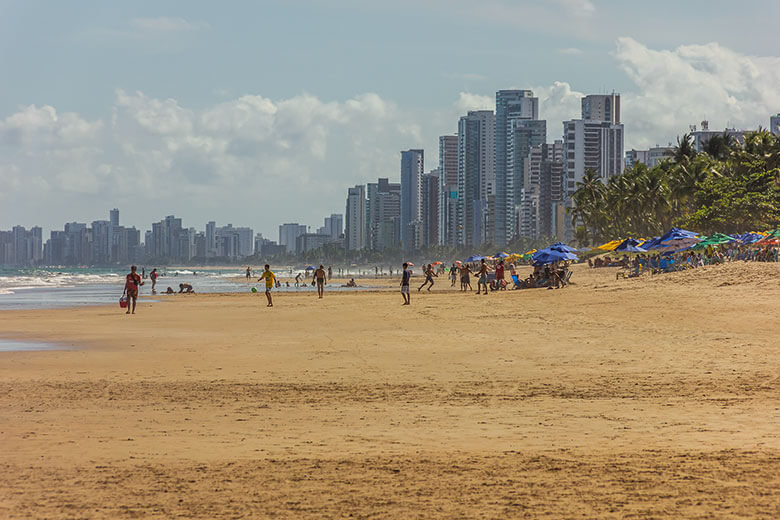
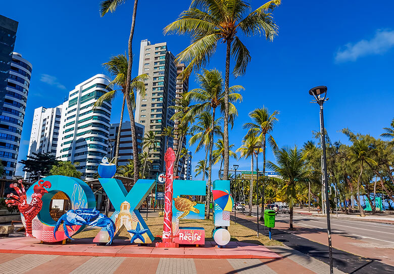
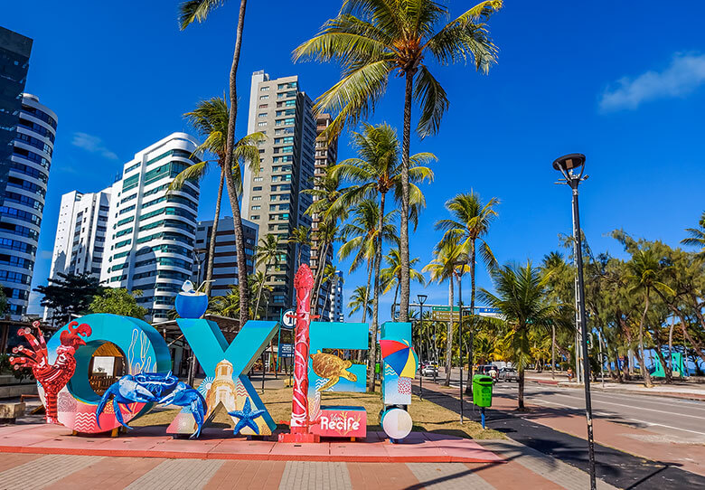

Praia de Boa Viagem
A Praia de Boa Viagem é a praia urbana mais famosa da cidade do Recife, capital do estado brasileiro de Pernambuco.
A maior parte da Praia de Boa Viagem é protegida por uma barreira de recifes naturais, que deu nome à cidade. No século XVII, a povoação da Boa Viagem servia de ponto de descanso dos viajantes que por ali transitavam vindos do sul da Capitania de Pernambuco. A praia tornou-se depois um local de veraneio para os recifenses, até a chegada dos edifícios nas décadas de 1940 e 1950. Tais edifícios beira-mar criam sombras sobre a praia, o que levanta críticas. A orla dispõe de parque, jardim e espaços de prática desportiva.
Na maré baixa formam-se várias piscinas naturais rasas, com águas mornas e transparentes, ao longo da praia. Também durante a maré baixa é possível andar sobre os recifes, que são relativamente planos e largos (mas escorregadios). Quando a maré sobe, os arrecifes ficam completamente cobertos pela água. Na Praia de Boa Viagem há quiosques padronizados, ciclovia, pista de cooper, chuveiros, quadras de vôlei e tênis e equipamentos para musculação.
Onde fica?
A praia de Boa Viagem está situada no bairro homônimo, Zona Sul da capital pernambucana, delimitada pela Praia do Pina ao norte e pela Praia de Piedade ao sul.
Galeria de Imagens
 
